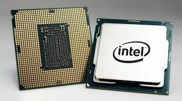

The motherboard is the main printed circuit board in a computer. It acts as a central hub, connecting all essential components such as the CPU, RAM, storage drives, and peripherals. It provides power and data pathways for these components to communicate and work together. Motherboards come in various sizes and configurations to accommodate different systems, from desktops to servers. Key features include chipset, socket type, expansion slots, ports, and connectors. Choosing the right motherboard is crucial for system compatibility and performance, as it determines the capabilities and limitations of your computer setup.
CPU
A CPU (Central Processing Unit) is the primary component of a computer responsible for executing instructions and performing calculations. Acting as the "brain" of the system, it interprets and executes instructions from programs and manages data movement within the computer. CPUs consist of multiple cores, each capable of executing tasks independently, allowing for parallel processing. Clock speed, measured in gigahertz (GHz), determines how quickly the CPU can execute instructions. Modern CPUs often feature multiple cores and threads, enhancing multitasking capabilities. They interact with other components like RAM, storage, and peripherals, orchestrating the overall functionality and performance of the computer system.

Heatsink
Heatsinks are crucial for keeping electronic devices from overheating. If a component gets too hot, it can slow down or even stop working. Heatsinks help maintain safe operating temperatures, ensuring your devices run smoothly and last longer.
RAM
RAM(Random Access Memory) is a type of computer memory used to store data and program instructions that the CPU (Central Processing Unit) needs to access quickly. It's volatile memory, meaning it requires power to maintain data. RAM is much faster than traditional storage devices like hard drives, enabling quick access and manipulation of data. Computers use RAM to run programs and temporarily store data while in use. Its capacity is measured in gigabytes (GB) or terabytes (TB). Upgrading RAM can improve a computer's performance, especially when multitasking or running memory-intensive applications.
GPU
A GPU(Graphics Processing Unit) is a specialized processor designed for rendering images and videos. It excels in parallel processing, handling multiple tasks simultaneously. Commonly used in graphics-intensive applications like gaming, GPUs accelerate tasks by offloading computation from the CPU. They consist of thousands of cores that work together, accessing their own high-speed memory (VRAM). GPUs aren't limited to graphics; they're employed in scientific simulations, machine learning, and cryptocurrency mining due to their high computational power. Programming GPUs typically involves languages like CUDA or libraries such as TensorFlow. Their efficiency in parallel computing makes them essential in various fields beyond graphics.
Hard Drive
A hard drive is a non-volatile storage device used to store and retrieve digital data. It consists of one or more rotating disks (platters) coated with magnetic material and an armature that moves across the platters to read and write data. Hard drives are typically used for long-term storage of files, programs, and operating systems in computers and other electronic devices. They provide relatively large storage capacities at affordable prices but are slower than solid-state drives (SSDs) due to mechanical components. Hard drives come in various form factors, including HDDs (hard disk drives) for traditional desktops and laptops, and enterprise-grade HDDs for servers and data centers.
Expanison slot
Expansion slots are openings on a computer's motherboard where additional hardware components, such as graphics cards, network cards, or sound cards, can be installed to expand the system's capabilities. They come in various forms, like PCI, PCIe, or AGP slots, each offering different speeds and compatibility. Expansion slots allow users to upgrade or customize their computers according to their needs, enhancing performance or adding new features. Installing components into expansion slots typically requires opening the computer case and inserting the card into the slot, ensuring compatibility with the motherboard and system requirements.
Power supply unit
A power supply unit (PSU) is a hardware component that converts electrical power from an external power source into usable power for a computer's internal components. It provides stable and regulated power to the motherboard, CPU, GPU, and other hardware components. PSUs come in various form factors and wattages to suit different computer builds. They typically include connectors for SATA, PCIe, and other peripherals. A reliable PSU ensures stable performance and protects components from power fluctuations. Key factors to consider when choosing a PSU include wattage, efficiency rating, and connector compatibility with your hardware components.
If you want to learn more about Computer Hardware, follow this link⇒Computer Hardware